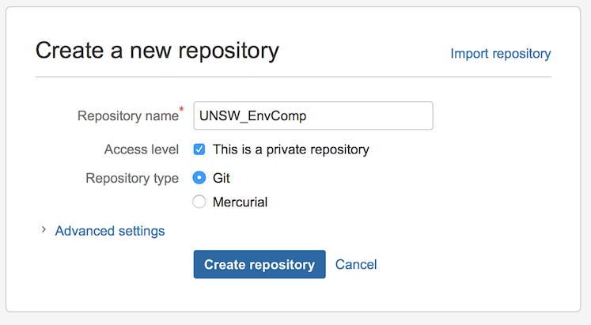

Control de versiones
Ventajas, desventajas y soluciones
Fundamental para la organización de proyectos es mantener un conjunto consistente, uniforme y simple de archivos de trabajo que puedan ser comprendidos por tu futuro yo, colaboradores y personas interesadas que deseen reproducir tus análisis o reutilizar tu código o datos. Sin embargo, ¡para proyectos complejos con muchos colaboradores, mantener la limpieza y hacer un seguimiento de los cambios en los archivos puede ser muy desafiante!
Si bien los servicios de intercambio de archivos como Dropbox son fáciles de usar y pueden mantener un conjunto consistente de archivos en tu(s) computadora(s) y/o entre colaboradores, tienen algunas desventajas graves. Específicamente, no pueden decirte qué ha cambiado dentro de los archivos. Tampoco pueden manejar conflictos entre archivos cuando tú y tus colaboradores están trabajando al mismo tiempo en las mismas cosas. Esto a menudo lleva a acumular archivos que nadie parece saber para qué son o en qué se diferencian. Su capacidad limitada para rastrear archivos eliminados también lleva a una acumulación de archivos “demasiado temerosos para eliminar”. A medida que los proyectos se desarrollan, estos se convierten en documentos y pasan por innumerables rondas de revisiones. Un poco de organización puede evitar que el caos se agrave y mantener la reproducibilidad (tanto para ti como para otros) a través de todos los cambios.
Idealmente, sería bueno poder ver fácilmente el conjunto actual (y esperemos que el mejor) de archivos, pero también poder ver quién los ha cambiado y qué partes específicas de los archivos se han modificado. Mantener un registro de la evolución de un proyecto en particular también es importante para poder resolver rápidamente los problemas cuando (no si) surjan. Configurar tus proyectos bajo un sistema de control de versiones te permite hacer todo lo anterior y más.
Ventajas. Las principales ventajas de usar control de versiones en lugar de simplemente usar Dropbox incluyen:
Hace un seguimiento de todos los archivos relevantes para un proyecto específico y/o que son necesarios para su reproducibilidad al asignarles un identificador único.
Documenta la evolución de cada archivo en un proyecto, incluidos datos, manuscritos y código, al permitir al usuario asignar una etiqueta de confirmación que describe cómo se modificó el archivo.
Indica automáticamente quién, cuándo y dónde se modificó un archivo específico, identificando las ubicaciones dentro del texto que han cambiado.
Mantiene un historial registrado de todos los archivos modificados, lo que te permite retroceder en el tiempo para ver versiones antiguas de archivos o el estado del proyecto en un momento anterior.
Fusiona automáticamente archivos en los que tú y tus colaboradores están trabajando al mismo tiempo e introduce marcadores de conflicto en el texto del archivo si se han editado las mismas líneas. Esto te obliga a lidiar y corregir los conflictos de inmediato.
Facilita la ejecución de análisis y scripts en servidores.
Promueve una colaboración más fácil entre los miembros del laboratorio y los coautores al mantener los archivos sincronizados y anotados en diversas plataformas.
Facilita mucho al final de un proyecto compartir y almacenar rápidamente los datos y el código relevantes para reproducir el proyecto (análisis, artículo, etc.), lo cual es a menudo un requisito previo necesario para su publicación.
Facilita corregir errores dentro de un proyecto al permitirte localizar al colega relevante (o viceversa) cuando surgen problemas después de actualizaciones o cambios.
Te obliga a pensar en las partes relevantes del proyecto que son esenciales para su reproducibilidad y te permite personalizar lo que se rastrea.
Desventajas. Aunque lo anterior es definitivamente atractivo, el control de versiones y git tienen algunas desventajas. Primero, en algún momento necesitarás dedicar un poco de tiempo a programar antes y después del trabajo diario. Aunque la pequeña inversión de tiempo para hacer esto vale mucho la pena a largo plazo. Segundo, la programación adicional puede dificultar que los colaboradores se familiaricen y comiencen a utilizar un sistema de control de versiones. No todos estarán tan familiarizados con la terminal o la línea de comandos, lo que puede crear barreras de entrada.
Soluciones. Afortunadamente, existen soluciones muy fáciles y simples para muchos de los problemas mencionados anteriormente. Por ejemplo, ahora hay interfaces de usuario gráficas (GUI) muy útiles y fáciles de usar, como SourceTree, que eliminan la necesidad de utilizar la línea de comandos por completo, facilitan y simplifican la configuración de repositorios y son multiplataforma (es decir, Windows, Mac, etc.).
Cómo funciona
Dado que no todos querrán usar la línea de comandos, mostraremos algunos conceptos básicos utilizando tanto la línea de comandos como una GUI (SourceTree). Haremos esto porque creemos que los beneficios de utilizar el control de versiones superan con creces los costos de no utilizarlo, por lo que esto debería permitir que la mayoría de las personas comiencen de inmediato.
También demostraremos cómo se relaciona la línea de comandos con la GUI. No cubriremos temas importantes como configurar claves SSH, configurar un archivo gitconfig, resolver conflictos, los cuales se explican detalladamente en otros lugares. En cambio, proporcionaremos una descripción general básica de cómo configurar un repositorio y el funcionamiento diario del seguimiento de archivos del proyecto.
Configuración de un repositorio.
Para comenzar a rastrear archivos de un proyecto, necesitamos configurar un repositorio de proyecto que mantenga todos los archivos relevantes (es decir, datos, metadatos, código, funciones, manuscritos, etc.) en un solo lugar. El directorio del proyecto será la base de un proyecto reproducible (consultar gestión de proyectos para más detalles).
Para aprovechar al máximo el control de versiones, queremos tener tanto una copia local (en tu computadora) como una copia remota (en la nube) de nuestro repositorio. Hay varios sitios de alojamiento que te permitirán crear un repositorio en la nube, incluyendo GitHub y BitBucket. Bitbucket te permite crear repositorios privados de forma gratuita, mientras que todo en GitHub es público (aunque puedes pagar por repositorios privados).
Para configurar un servidor remoto, primero deberás crear una cuenta en uno de estos sitios de alojamiento. Una vez que hayas terminado, también deberás descargar e instalar Git (si usas la línea de comandos), que es el sistema de control de versiones que utilizaremos. Crear un repositorio en línea es fácil, inicia sesión en tu cuenta y ve a Repositories -> Create new repository. Dale un nombre y eso es todo, si estás en Bitbucket, literalmente te dirá qué hacer a continuación en la línea de comandos (Figura 1 y 2).

Si estás usando la línea de comandos, simplemente navega hasta el lugar donde deseas que se encuentre la carpeta y escribe los comandos de la Figura 2 anterior. También te guiará a través de algunos pasos importantes sobre cómo funciona Git, pero abordaremos eso más adelante. El componente clave de este repositorio que se necesita para configurarlo y conectarlo a una carpeta en tu computadora es la ruta de acceso ssh o http:
https://UNSW_EnvComp@bitbucket.org/UNSW_EnvComp/unsw_envcomp.git.
Este nombre de ruta de acceso establecerá la conexión entre una carpeta de proyecto local (es decir, una carpeta en tu computadora) y la existente en el servidor (es decir, Bitbucket). También te permitirá clonar el repositorio completo en tu computadora si es necesario. Si deseas clonar el repositorio en tu computadora, usa la línea de comandos para navegar hasta donde deseas que se encuentre la carpeta y escribe lo siguiente:
git clone https://UNSW_EnvComp@bitbucket.org/UNSW_EnvComp/unsw_envcomp.git
Esto copiará efectivamente desde el servidor todo tu repositorio en la ubicación que desees y es casi idéntico a los comandos sugeridos en la Figura 2. También creará automáticamente una conexión entre tu directorio local y el servidor. También puedes proporcionar esta ruta a tus colaboradores, y siempre que se les dé acceso de lectura y escritura al repositorio (se puede cambiar en la configuración del repositorio en línea), también podrán obtener todo desde el servidor de la misma manera descrita anteriormente.
Crear un repositorio en SourceTree también es bastante fácil. Una vez que tengas la ruta para tu repositorio, ve a SourceTree, haz clic en "New Repository" -> "Clone from URL" (Figura 3). Agrega la ruta ssh o http://, decide dónde deseas que viva el repositorio en tu computadora y luego haz clic en "clone". Esto descargará los contenidos del repositorio (si no está vacío) y configurará esta conexión en SourceTree para que puedas comenzar a rastrear y enviar al servidor. Si el repositorio ya existe en tu computadora y deseas agregarlo a SourceTree, simplemente haz clic en "Add existing local repository" en lugar de "Clone from URL".

Rastreo de archivos y envío a la nube
Ahora que estás configurado y has clonado o iniciado un repositorio en una carpeta local, el truco está en hacer un seguimiento de los archivos importantes, como datos, código R y documentos (es decir, .Rmd, .md, .txt, etc.). ¿Cómo hace esto Git? Bueno, básicamente hay un conjunto de comandos clave que se necesitan y que se implementan continuamente para realizar un seguimiento de los archivos nuevos o modificados. Utilizas estos comandos al final de tu día de trabajo o cuando hayas realizado un gran avance y quieras enviar los cambios al servidor lo antes posible. Los comandos clave y su orden de ejecución son los siguientes:
Consigue una taza grande de café (o té).
Este comando obtiene los nuevos archivos del servidor.
git pull
- Realiza una serie de acciones en los archivos del proyecto y luego verifica qué ha cambiado.
git status
- Agrega un archivo modificado o no rastreado al área de preparación. Reemplaza
"nombre de archivo"con la ruta y el nombre del archivo (por ejemplo,"/R/function.R"). También puedes agregar muchos archivos a la vez usando"--all"en lugar de"nombre de archivo".
git add nombre_de_archivo
- Una vez agregado, deja un mensaje sobre qué hace el archivo, cómo ha cambiado, etc.
git commit -m "agrega un mensaje sobre los cambios en el archivo"
- Envía los cambios al servidor.
git push
- ¡Ve a casa y relájate! Tu proyecto está bajo control de versiones.
Los procedimientos paso a paso mencionados anteriormente se utilizan cuando deseas realizar un seguimiento de los cambios, y estos comandos se escriben literalmente en la línea de comandos en el orden presentado (ver Figura 4). El Paso 2 solo es necesario al comenzar a trabajar en el directorio y recuperará cualquier cambio que los colaboradores hayan realizado y que aún no conozcas. Si eres el único que trabaja en el proyecto y solo usas una computadora, entonces el Paso 2 es opcional porque tu directorio local siempre tendrá los archivos más actualizados.

SourceTree hace todo esto mucho más fácil al proporcionarte una serie de casillas de selección y botones que puedes utilizar para hacer todo esto muy rápidamente. Para agregar un archivo para realizar su seguimiento, simplemente haz clic en las casillas de los archivos relevantes (o en todas) en el área de “Archivos sin preparar” (Figura 5). Una vez que hayas seleccionado todas las casillas, los archivos estarán en el área de “Archivos preparados”. Esto es equivalente a git add en la línea de comandos. Ahora están listos para ser confirmados, y puedes dejar un mensaje de confirmación en la ventana en la parte inferior de la pantalla y hacer clic en el botón Commit en la esquina derecha. Esto es equivalente a git commit -m "mensaje" en la línea de comandos.

Una vez que tus archivos hayan sido confirmados, los archivos listos para ser enviados aparecerán en el botón “Push” en la parte superior de la pantalla (Figura 5). Haz clic en esto y serán movidos al servidor. A medida que edites y agregues archivos, nuevos archivos aparecerán en el área de preparación y simplemente puedes repetir la secuencia anterior para agregar, confirmar y enviar estos al servidor. El botón “Pull” corresponde al paso dos en la secuencia de Git mencionada anteriormente y siempre debe ser utilizado al inicio del día si estás trabajando con colaboradores.
Ignorar archivos que no deseas rastrear
En muchos casos, habrá archivos dentro de un proyecto que no deseas rastrear. Esto puede ser porque no son necesarios para la reproducibilidad del proyecto, o son archivos solo para ti y no necesarios para tus colaboradores. Estos podrían incluir notas útiles relevantes solo para ti, documentos en los que estás interesado o incluso archivos de salida grandes. Estos archivos no necesitan ser rastreados, por ejemplo, puede que no haya necesidad de rastrear figuras y tablas, ya que en muchos casos se pueden regenerar a partir del código del proyecto y ocupan mucho espacio en el servidor. Ignorar estos archivos es fácil usando lo que se llama un archivo .gitignore. El “.” al inicio del archivo significa que está oculto y no se mostrará en un directorio de trabajo normal. Afortunadamente, Git y SourceTree reconocerán estos archivos. El .gitignore es un archivo que se mantiene en el directorio principal de la carpeta de tu proyecto y generalmente se rastrea. Puedes crear un archivo .gitignore fácilmente en la línea de comandos utilizando algunas líneas de código (Figura 6).

En la Figura 6, he ignorado una carpeta “photos/”. Podemos ver que ahora desaparece (comparado con la Figura 4) de nuestra área de preparación en la ventana de Terminal. Simplemente podemos agregar cualquier archivo o carpeta que no queremos rastrear aquí antes de agregarlo para que Git los ignore. Si queremos comenzar a rastrear un archivo que hemos ignorado, simplemente abre el archivo .gitignore en un editor de texto y elimina el archivo que deseas rastrear. Guarda el archivo .gitignore y luego agrega, commit y push como se menciona anteriormente.
Ayuda adicional
Los sistemas de control de versiones, y Git en particular, pueden hacer mucho más de lo que hemos cubierto anteriormente. Hemos proporcionado una breve introducción sobre cómo comenzar y usar Git para rastrear los archivos de tu proyecto. Si deseas saber más sobre cómo crear ramas, manejar conflictos y muchas otras características útiles, puedes visitar la página web de Git, donde encontrarás toda la información relevante para realizar tareas más avanzadas.
Autor: Daniel Noble
Año: 2016
Última actualización: r format(Sys.time(), "%b %Y")